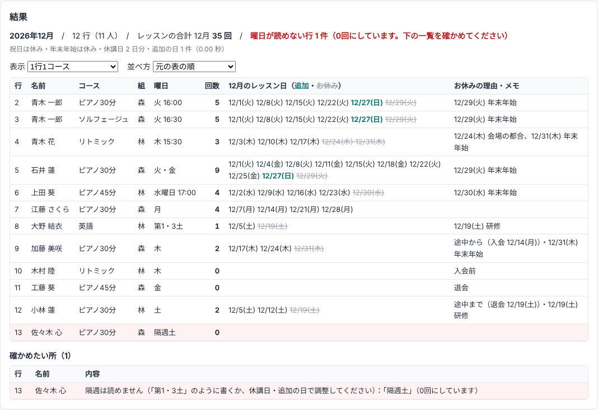

月ごとのレッスン日と回数
ピアノ・英語・書道・学習塾・スポーツなどの、曜日で通う教室のためのツールです。生徒の一覧（名前・コース・曜日）と、教室の休講日から、生徒ごとの今月のレッスン日と回数を出します。
- 5週ある月・祝日・年末年始：カレンダーを数えなくても、火曜の人は5回、月曜の人は祝日を除いて3回、と1人ずつ出します
- 休講日の書き方：「12/24」「12/29〜1/5 冬休み」のほか、「12/9 リトミック」「12/19 林」のようにコース・講師・組だけの休講も書けます。「12/27 火」と書けば火曜の人に振替の日を足します
- 教室の決まり：「第1・3土」のクラス、「月4回まで（5回目は休み）」「第5週は休み」、月の途中の入会・退会（入会日から数える）
- 1人1枚のレッスン日のお知らせ：月ごとのレッスン日・回数・お休みの日を、切り取り式で A4 に8枚ずつ印刷
- 月謝の計算へ：読み込んだ表に「12月の回数」の列を足して保存。月謝の請求額の一覧 の回数の列にそのまま使えます
ソフトのインストールは不要で、いつものブラウザで動きます。
お試し版はすべての機能を使えて、計算するのは表の先頭10行までです。決済が終わると、そのまま製品版の画面に移動します。ブックマークしておけば何度でも使えます。

見本のデータ（架空の名前）で作った例です。
こんなときに
- 月末にカレンダーを見ながら、生徒ごとに「来月は何回か」を数えて月謝袋に書いている
- 5週ある曜日・祝日の休み・年末年始で、曜日ごとに回数が違い、数え間違いが心配
- 講師の研修や会場の都合で、一部のクラスだけ休みにする月がある
- 休みの代わりの振替の日を、どの生徒に足したか分からなくなる
- 保護者に渡す「今月のレッスン日」のお知らせを、1枚ずつ手で書いている
- 回数で月謝が変わるので、回数の表を作ってから請求額を出している
できること
- 読める表：1行に1人1コースの表（名前・曜日、あればコース・講師・入会日・退会日）。列は見出しから選び、選び直せます。同じ名前の行は「1人ごと」の表示でまとめます
- 曜日の書き方：「火」「火曜日」「火・金」「水 17:00」「木 16時半」「土日」「第1・3土」「第2・第4水曜」「Tue」。時刻は読み飛ばします。「隔週」など読めない書き方は、行番号つきで知らせます
- 期間：1か月のほか、2・3・6・12か月をまとめて数えられます（年間の回数の表にも）
- 休み：祝日（振替休日を含む。2010〜2099年を計算）、年末年始（12/29〜1/3）、第5週、1か月の上限、休講日の一覧（全員・コース・講師・組・名前・曜日ごと）
- 追加の日：「12/27 火」「12/27 リトミック」のように、対象の人にレッスン日を足します。お知らせでは「＊」で分かるようにします
- 入会・退会：入会日より前・退会日より後のレッスンは数えず、「入会前」「退会」「途中から」と表示します
- 表示：1行1コース（レッスン日とお休みの日・理由）、1人ごと、曜日ごとのレッスン日、日ごとのコマ数と名前
- 確かめたい所：曜日が空欄・読めない行、レッスンが0回の月、上限で外した回、同じ名前・同じコースの行、当たる人がいない休講日・追加の日
- 印刷と保存：レッスン日のお知らせ（1人1枚、A4 に8枚、切り取り線つき）、回数の一覧、曜日ごとのレッスン日。Excel ファイル（.xlsx）には1行1コース・1人ごと・曜日ごと・日ごと・レッスン日の明細・確かめたい所のシート。CSV は「元の表に回数の列を足したもの」と「レッスン日の明細」
- CSV（UTF-8・Shift_JIS）と Excel ファイル（.xlsx）を読めます。Excel の表をコピーして貼り付けても使えます
できないこと（購入前にご確認ください）
- 月謝の金額は出しません。回数の列を足した表を 月謝の請求額の一覧 で読み込むと、料金表から請求額を出せます
- 個人の欠席・振替の残りは数えません（振替レッスンの残り回数 があります）
- 「隔週」「月2回（日付は毎月決める）」のように、曜日で決まらない通い方は数えられません。追加の日に日付を書いて足すことはできます
- 時間割（何時にだれが入るか）や講師の空き枠は作りません
- 祝日は法律の決まりから計算しています。春分の日・秋分の日は計算による日付で、正式には前の年の2月に官報で決まります。臨時の休日は休講日に書いてください
- お知らせの送信（メール・LINE）はできません。印刷か、PDF に保存してお使いください
- スマートフォンでは操作しにくいため、パソコンでお使いください
Excel だけで数えるなら
A1 に数えたい月の1日（2026/12/1 など）、C 列に曜日（「火」のように1文字）、「休講日」のシートの A 列に休講日と祝日を並べたとき、その月のレッスンの回数は
=NETWORKDAYS.INTL($A$1,EOMONTH($A$1,0),REPLACE("1111111",FIND(C2,"月火水木金土日"),1,"0"),休講日!$A$1:$A$30)
で出せます。NETWORKDAYS.INTL の3つ目は「月〜日の7文字のうち、0の曜日だけを数える」という指定で、FIND で曜日の位置を0にしています（表計算ソフトで、2026年12月・休講日 12/29〜12/31 の火・水・月・金がそれぞれ4回になることを確かめました）。
注意：C 列に「火曜日」「火・金」「水 17:00」と書いてあると FIND の結果が合わないか、1つの曜日しか数えません。祝日の一覧は自分で並べる必要があります。「12/9 はリトミックだけ休み」のようなコースごとの休講、振替の追加の日、「第1・3土」、入会日から数えることは、この式ではできません。
このツールが向いているのは、曜日の書き方がそろっていない、コースや講師ごとに休みが違う、振替の日を足す、入会・退会がある、1人1枚のお知らせまで作りたい、といったときです。
よくある質問
| データはどこかに送られますか？ | 送られません。読み込み・計算・印刷・保存はすべてお使いのブラウザの中で行います。休講日・追加の日・休みの決まり、教室の名前と添える文だけをブラウザに保存し（次の月にそのまま使えます）、生徒の名前は保存しません。 |
|---|---|
| 休講日と追加の日が同じ日のときは？ | 追加の日が先です。たとえば全員が休みの日でも、「12/27 火」と書けば火曜の人にはレッスン日として数えます。 |
| 「月4回まで」は、どの回を外しますか？ | その月のレッスン日を日付の順に並べ、5回目より後を外して「お休み」に入れます。追加の日も回数に入ります。 |
| 何人まで使えますか？ | 製品版は人数の制限はありません（3,000人・12か月分を、手元のパソコンで約0.2秒で計算できることを確かめています）。 |
安心してお使いいただくために
- 表はお使いのブラウザの中だけで処理し、サーバーには送信しません
- 動作環境：最新版の Chrome・Safari・Edge・Firefox（パソコン）
- 説明どおりに動かない場合は、ご購入から7日以内にご連絡いただければ返金します
請求額の計算には 月謝の請求額の一覧、振替の残りには 振替レッスンの残り回数、1年分の営業日のカレンダーには 年間営業カレンダーの作成・印刷 もあります。